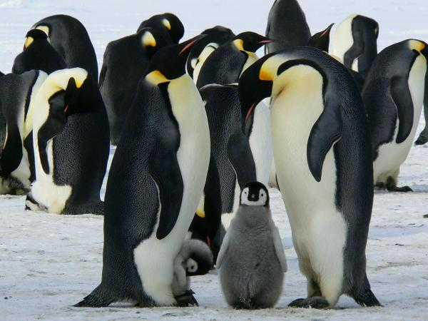
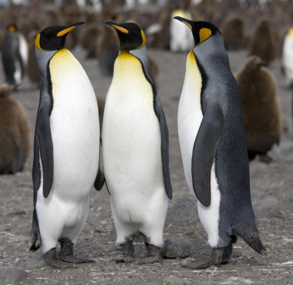
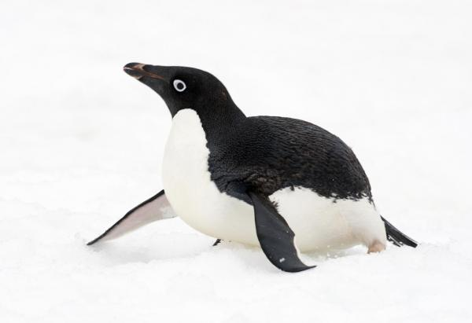
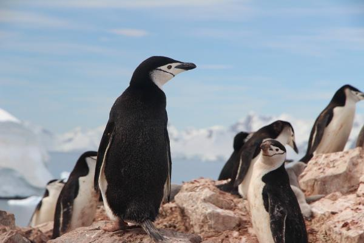

Especies de pingüinos
Pingüino emperador
El pingüino emperador (Aptenodytes forsteri) es el más grande de los pingüinos, puede llegar a medir 120 cm de alto y pesar entre 20-45 kg.
Cada año, realizan un largo viaje para reproducirse. La hembra pone un solo huevo que cuidan entre la pareja. Realizan turnos para poder salir a alimentarse. No fabrican ningún nido, incuban el huevo manteniendolo oculto entre sus patas.
Los pingüinos emperador utilizan las llamadas guarderías para proteger a sus crías. Los polluelos se reúnen en grandes grupos, en ocasiones varios cientos, para mantener el calor entre todos y protegerse mientras sus padres se echan a la mar para alimentarse.
Una vez regresan reconocerán a su hijo y este a sus padres gracias a las vocalizaciones que emiten.

Pingüino rey
El pinguino rey (Aptenodytes patagonicus) es el segundo pingüino más grande del planeta, puede medir 100 cm y llegar a pesar 16 kg. Guarda muchas semejanzas con el pingüino emperador pero con un tamaño menor.
Anida en Chile, islas de América del Sur y África.
La hembra solo pone un huevo y el cuidado es compartido por la pareja. La elección de pareja se basa en la viveza de la coloración del pelaje que es un reflejo de la salud del individuo.
La parte superior del pecho es naranja-amarillenta, al igual que en el área auricular.

Pingüino de adelia
El pingüino de adelia o de ojo blanco (Pygoscelis adeliae) es un pingüino de tamaño medio que alcanza los 60-70
cm y puede pesar 4 kg. Se caracteriza porque su ojo posee un anillo blanco alrededor. La base del pico está oculta por unas plumas negras.
Anida en colonias en el continente antártico y suelen poner 2 huevos.

Pingüino de barbijo
El pingüino de barbijo o de cara marcada (Pygoscelis antarcticus) puede alcanzar los 75 cm. Habita y anida en islas cercanas a Antártida
Tiene una línea negra bajo la barbilla que le da el nombre. Esta linea horizontal y el "casco" negro de su cabeza lo hacen fácilmente diferenciable de otras especies similares.
Suelen poner 2 huevos y construyen nidos con piedras de forma circular. Después crían a sus polluelos turnándose y más adelante en la guardería.
